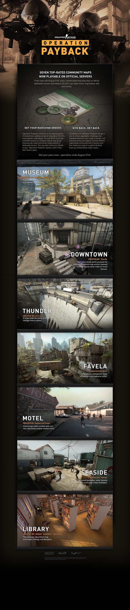

Operation Payback

About Operation Payback
Operation Payback, sometimes referred to as Operation: Payback, is the first Counter-Strike: Global Offensive Operation. The operation was scheduled to last from April 26, 2013 to July 31, 2013 but was extended until August 31, 2013 due to its success. Operation Payback features a purchasable pass costing $5.99 that opened up a new playlist of 7 community-created maps in Counter-Strike: Global Offensive, available in Classic Casual mode. All money made from selling the pass went directly towards the map creators, not Valve.(Scroll the picture on the right to see the original blogpost)
Other information
- It appears as if another popular custom map named Pool Day was to be featured, but was scrapped before launch.
- The Operation has raised over $150,000 for the map makers.
- The Operation Payback icon or similar icons are reused for the CSGO Weapon Case, CSGO Weapon Case 2, and CSGO Weapon Case 3, as well as the Arms Deal Collections icon for all three of these cases. However, the icon on the cases themselves differ from the Operation Payback icon.